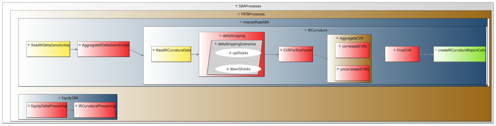

Open Standards For Testing Regulatory Calculations
AORTA provides open standards for defining regulatory test scenarios, and regulatory test data and results.
AORTA is designed to work well with automated testing insfrastructure (continuous integration).
AORTA allows non-technical users to have a full understanding of test scenarios and tests, for example risk managers signing off on calculations.
AORTA provides lineage from regulatory rulebook text, to regulatory scenarios definitions, via high level functional descriptions of regulations which are easy for domain experts to create.
AORTA provides some standard means for defining input test data. In the first instance two input formats are supported, data that matches BIRD SMCubes format, and data that matches BIRD's logical data model format. In both cases we describe this data with a version of JSON for easy source control and comparison of versions.
AORTA provides a standard means for defining expected results, re-using BIRD's DPM descriptions for defining regulatory reports.
AORTA provides organised measurable coverage for regulatory tests scenarios.
Different user interfaces can be built on top of this standard, but the artefacts stored to files will always follow the single json based standard so they can be accessed by different compatible tools.
Below is an example of the high level functional description for FRTB curvature interest rate curvature processing.
The description acts as a colour coded functional breakdown.
For example behaviour inside brown boxes (parallel modules) can be run in parallel (i.e. they have no dependencies between them) and behaviour in blue boxes (serial modules) must be run serially.
Modules can contain processes or other modules.
Yellow boxes relate to processes reading in data, red boxes are processes processing data, green boxes are processes righting results to report cells.
White ovals are processing scenarios
Note that 'processes' and 'modules' here relate to functionality (ie. they are not technical concepts), they may or may not be translated into technical modules and processes, this is up to the technical implementation. Parallel modules contain things that are functionality that is not dependent, perhaps technically such behaviour is run in parallel but this is not a necessity. The focus of the functional breakdown is to give structure to the test scenarios, it does not need to be used to drive the technical implementation of regulatory calculations, although it may be useful to do so.
Scenarios can be highlighted on the breakdown like upshock and downshocks.
We can link items from the functional breakdown to actual regulatory rulebook text .
We can also link from parts of the breakdown model (like modules or scenarios) To actual test scenario descriptions in AORTA. This allows full lineage between regulatory tests and regulatory requirements, and allows domain experts to shape the structure of a set of test scenarios.
